Ghosts
Mixed media
2021–2022
This series originated from my photo archive. As I looked through the photos, I noticed things that hadn’t caught my attention before; the photos evoked new feelings in me. Through them, I learned something about myself back then, and about the world I lived in just a few years ago. Unconsciously, I felt compelled to add something—to align what I saw with what I felt.
That’s how this playful series emerged, straddling the line between graphic design and photography—my two great passions. Interestingly, around the time I was creating these works, I began to practice graphic design less and less and focus more on photography—perhaps this served as a transitional bridge in many ways.
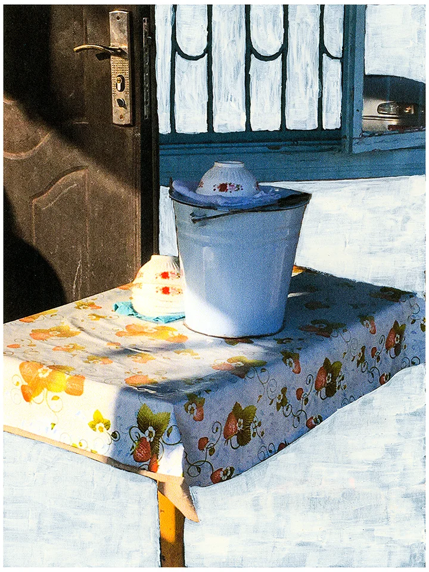
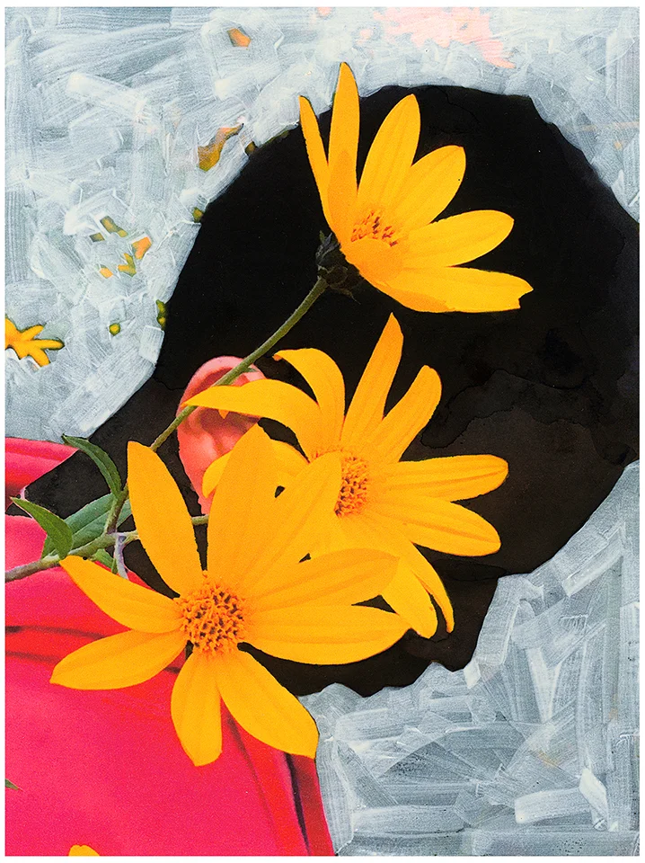
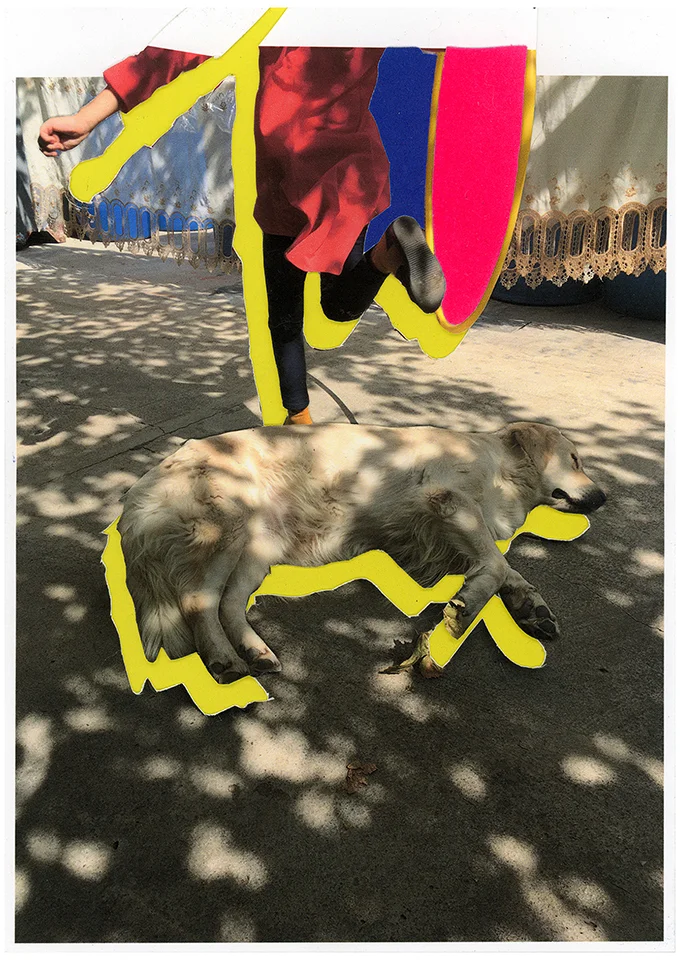
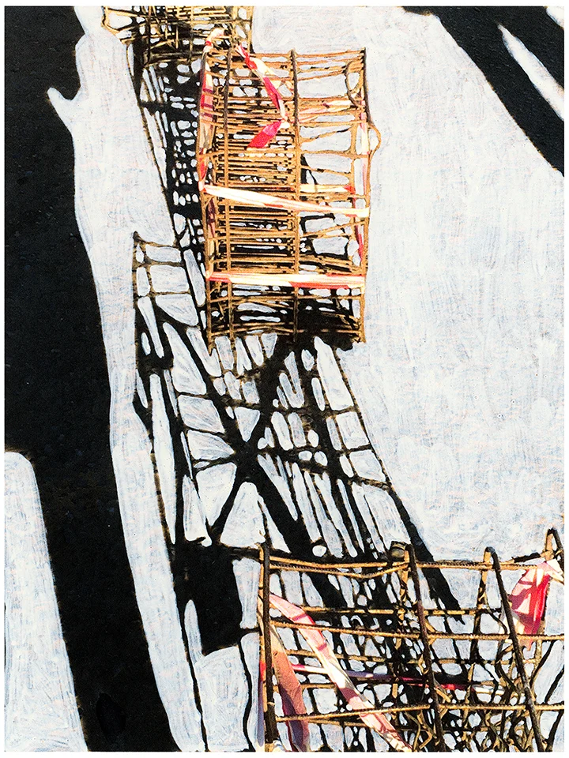
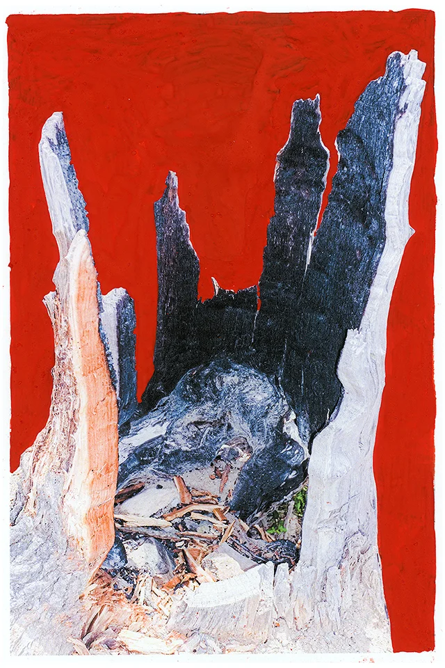
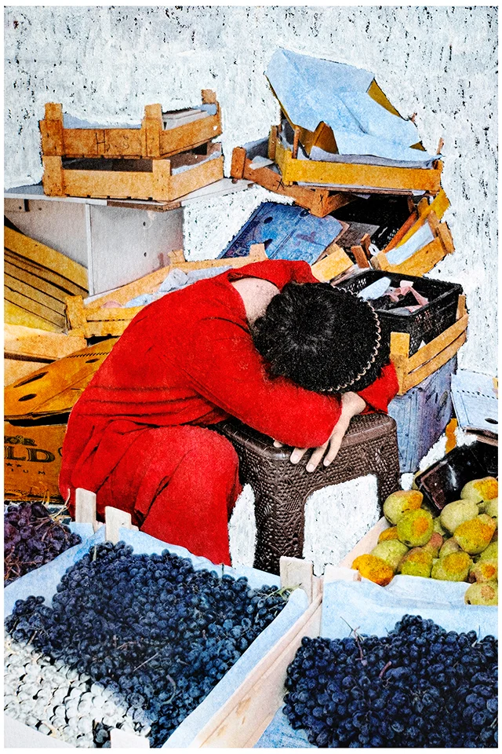
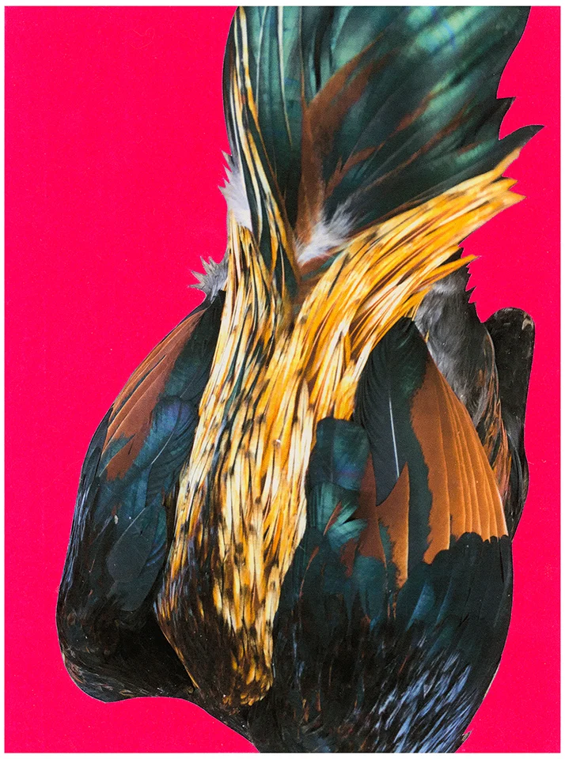
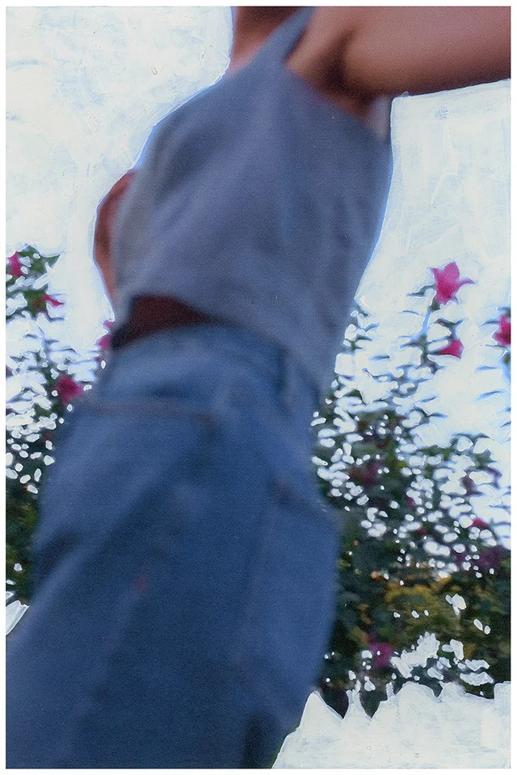
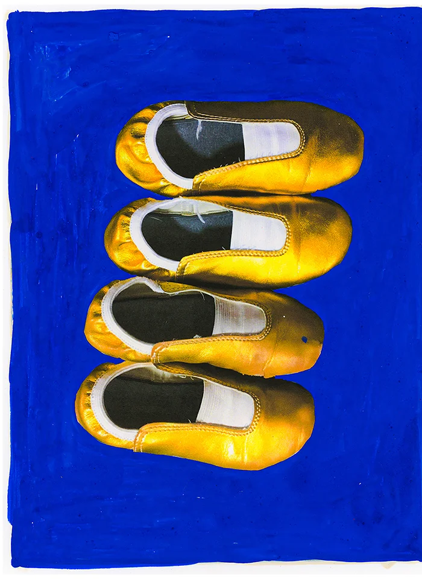
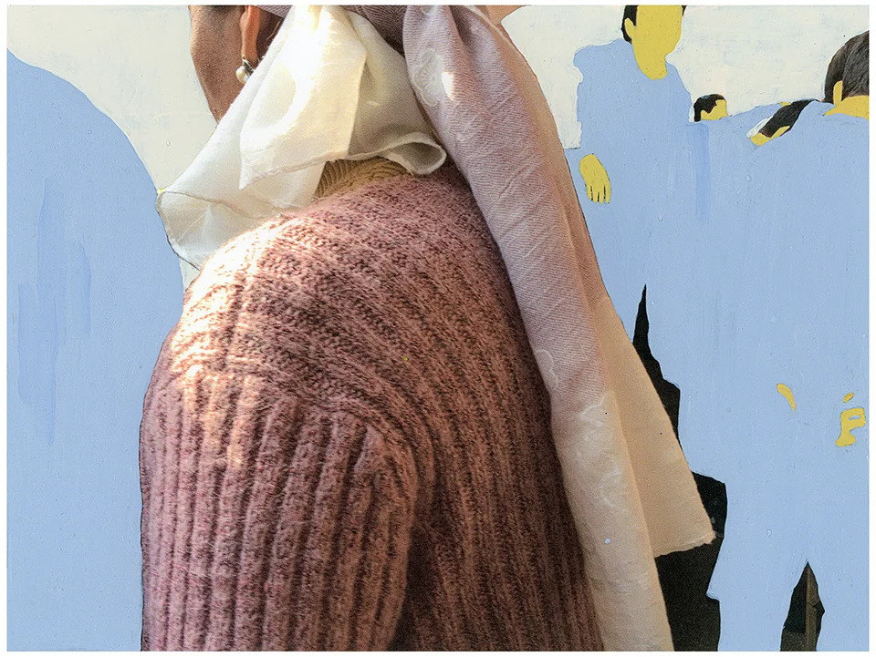
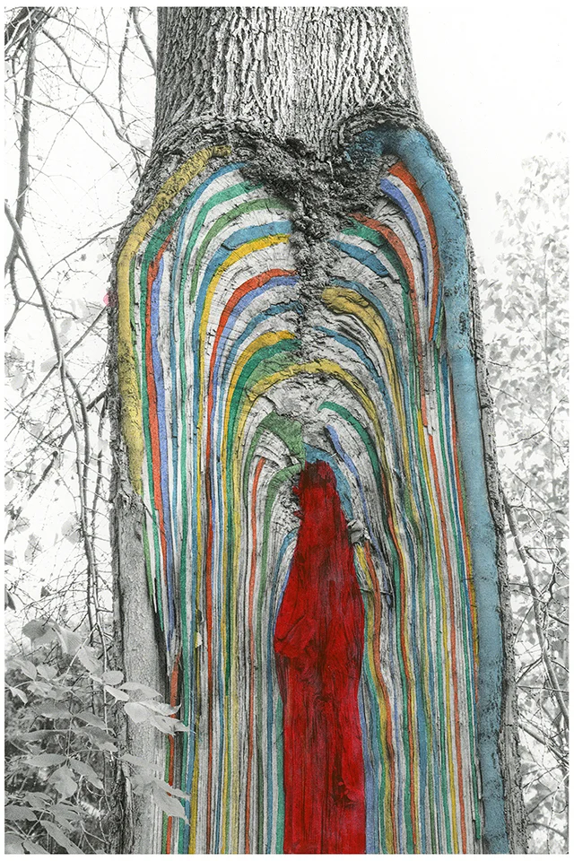
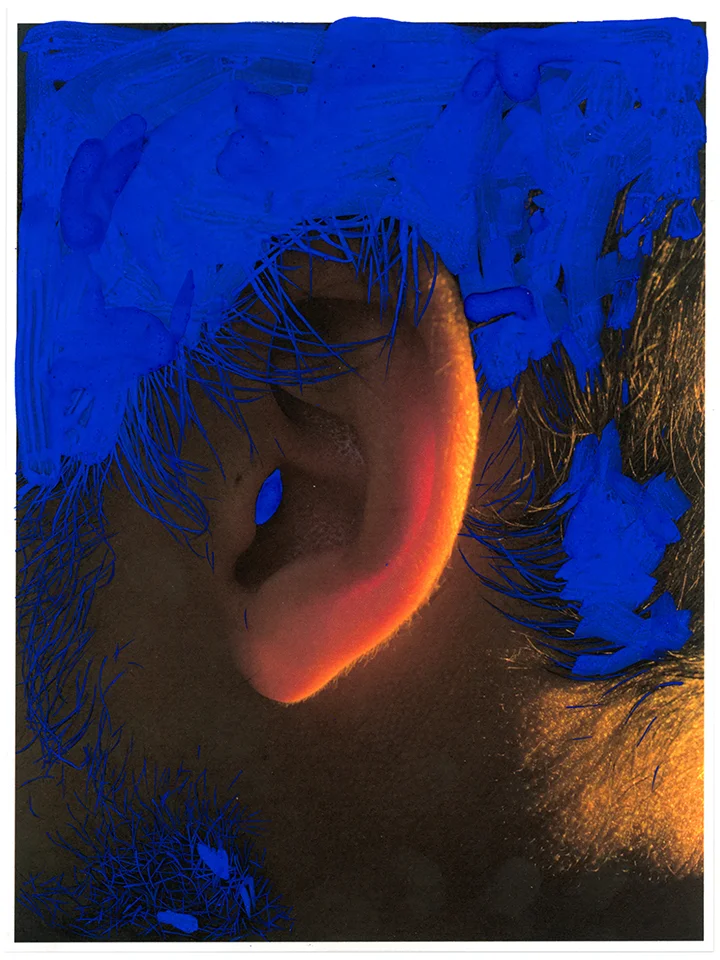
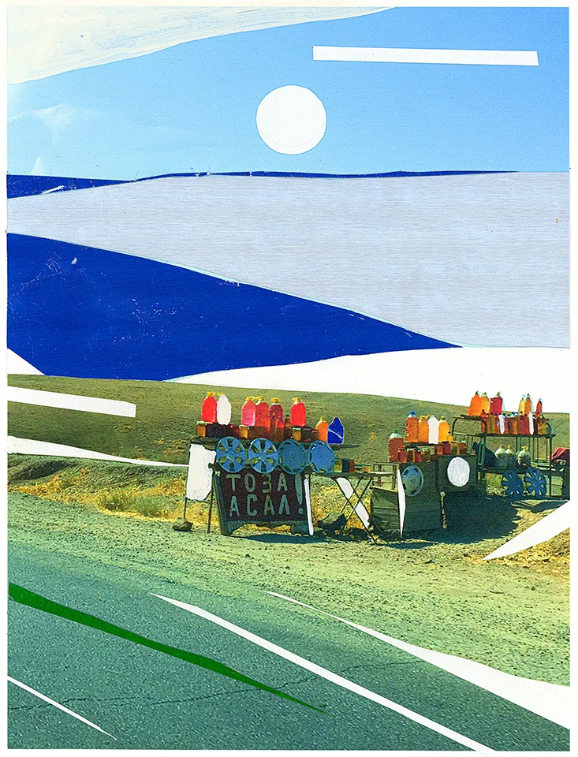